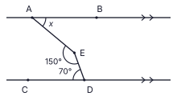
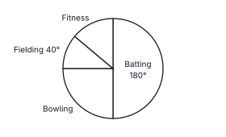
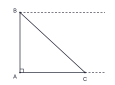
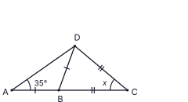
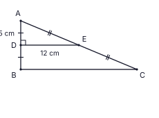
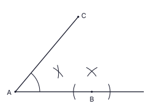

Part A
Answer all questions on this paper itself. (2 marks each; take π = 22/7 where needed)
Six workers can level a plot in Nimesha’s garden in 20 days. All the workers work at the same rate. How many more workers must be employed so that the work is finished in 8 days?
In the figure, AB ∥ CD, ∠AED = 150° and ∠EDC = 70°. Find the size of ∠BAE (x).

Simplify: 12x + 35x − 310x
The base of a right prism is a triangle. Which one of the following can not be a face of this prism? Put a tick (✓) against the correct answer.
(i) a rectangle (ii) a square (iii) a trapezium
The pie chart shows the favourite training activity of the members of a cricket club. 36 members chose batting. Find the number of members who chose fielding.

In the circle with centre O, DOC is a straight line and C is the mid-point of the chord AB. ∠AEB = 130°. Find the size of ∠CDB.

Factorise: 3x2 − 48
It is given that 100.6021 = 4. Find the value of lg 400.
In the figure, AB is a vertical post on horizontal ground. A bird is sitting at B and a cat is at C on the ground; ∠BAC = 90°. The dashed lines are horizontal. On the figure, mark the angle of elevation of the bird from the cat as a and the angle of depression of the cat from the bird as b, and write the relationship between a and b.

A cylindrical flower pot has height equal to 5 times its base radius r. Find, in its simplest form, the ratio of the area of paper needed to wrap its curved surface to the area of paper needed to cover its circular base. (Curved surface area of a cylinder = 2πrh)
Kavindu rolls two fair tetrahedral dice together. Each die has four faces numbered 2, 3, 5, 7. Find the probability that the sum of the numbers on the two bottom faces is 10.
In the figure, ABC is a straight line and ∠DAB = 35°. Sides marked with the same number of ticks are equal in length. Find the size of x.

Let ξ = {x : 1 ≤ x ≤ 10, x is an integer}, A = {prime numbers in ξ} and B = {multiples of 3 in ξ}. Put a tick (✓) against the correct statement.
(i) A ∩ B = {3} (ii) A ∪ B = {2, 3, 5, 6, 7} (iii) n(A′) = 5
Simplify: (9a4b × 4a2b3) ÷ 6a3b2
In a geometric progression the second term is −40 and the third term is −20. Find the fifth term.
In the figure, ABCD is a cyclic quadrilateral and BD bisects ∠ADC. AB is produced to E. If ∠BAC = 26°, find the size of ∠CBE.

Find the highest common factor (HCF) of 12a2b3, 18a3b2 and 30ab4.
The base of a right triangular prism of height h has an area of 2464 cm2. A cylinder of the same height h has the same volume as the prism. Find the base radius r of the cylinder. (Volume of a cylinder = πr2h)
In triangle ABC, D and E are the mid-points of AB and AC respectively. ∠ADE = 90°, AD = 5 cm and DE = 12 cm. Find the perimeter of the trapezium BCED.

Find the equation of the straight line passing through the points (2, 7) and (5, 1).
In the figure, O is the centre of the circle and AOB is a straight line. A, B, D and E are points on the circle. ABCD is a parallelogram and ∠BCD = 70°. Find the size of ∠DEB.

Sachini invested a sum of money for 2 years at 4% per annum compound interest, with interest added at the end of each year. The interest for the second year was Rs. 2 600 and the total amount at the end of the 2 years was Rs. 67 600. Find the sum she invested.
In the figure, O is the centre of the circle and OA ∥ BD. ∠AOB = 70°. Find the size of ∠BED.

Solve the inequality 4x + 15 > 3 and write the negative integer values of x that satisfy it.
In the figure, the line AB touches a circle at B and the line AC also touches the same circle. Part of the construction needed to find the centre O of the circle is shown. Using your knowledge of constructions, complete the construction and mark the centre O.
